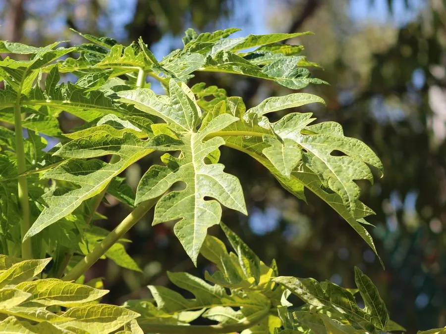

乔木 · 植物界
番木瓜 Carica papaya

番木瓜科常绿软木质小乔木，果肉橙红、富含木瓜蛋白酶，可鲜食、炖汤与加工，是重要的热带水果。
- 分类
- 门被子植物门纲木兰纲目十字花目科番木瓜科属番木瓜属
- 栖息环境
- 海拔 600 米以下的热带低地、村旁与果园，喜高温多湿和充足阳光
- 地理分布
- 原产中美洲；中国广东、广西、福建、台湾、海南、云南等地栽培
- 保护级别
- 暂无评估；中国未列入国家重点保护野生植物名录
物种志
番木瓜为番木瓜科番木瓜属常绿软木质小乔木，高 3–10 米，茎干粗壮、不分枝，表面有螺旋状排列的叶痕，体内富含白色乳汁。叶片大型，掌状深裂，直径可达 60 厘米，聚生于茎顶，形成伞状树冠。花单性或两性，雄花排成下垂的圆锥花序，雌花单生或数朵簇生；浆果长圆形或球形，成熟时橙黄至橙红，果肉厚实，中央空腔内密布黑褐色种子。
番木瓜原产墨西哥南部至中美洲一带，17 世纪经海路传入中国，现广东、广西、福建、台湾、海南、云南等地广泛栽培。它喜高温多湿和充足阳光，不耐寒，生长期需水量大但忌积水，从播种到结果通常只需一年左右。青果可炖汤、炒食或腌渍，熟果可鲜食、榨汁；未熟果乳汁中的木瓜蛋白酶能分解蛋白质，可用于嫩化肉类，也可提取入药。番木瓜雌雄异株，只有雌株和两性株会结果。
形态与习性
- 株高3–10 m，茎干不分枝，具叶痕
- 花期全年可开花，以 3–5 月最盛
- 果期全年，播种后约 1 年即可结果
- 光照喜光，光照不足则结果少
- 水分喜湿润，生长期需水量大，忌积水
- 土壤疏松肥沃、排水良好的沙壤土
- 主要用途鲜食、炖汤、制果汁，提取木瓜蛋白酶
趣味知识
- 番木瓜的茎干质地柔软、不木质化，严格说是草本状的“树”。
- 未熟果的白色乳汁含木瓜蛋白酶，是嫩肉粉的重要原料。
- 番木瓜有雌株、雄株和两性株，只有雌株与两性株能结果。
- 中国华南称“木瓜”，与蔷薇科的木瓜海棠并非同种。